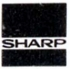
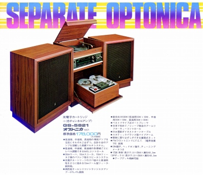
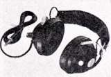
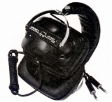
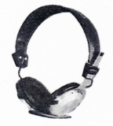
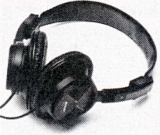

SHARP（シャープ）/OPTONICA （ オプトニカ）
総合家電メーカーであったシャープが一時期使っていたオーディオブランド。ブランド名の由来は同社がかつて開発していた光電式カートリッジの「光(OPTO）」からつけたとの説がある。ブランドとしては平面振動板などユニークなスピーカが記憶に残っている。

ヘッドフォンについては1970年の時点ですでに販売していたが、当時は「シャープ」ブランドでの販売だった。1975年頃から「オプトニカ」ブランドでの販売が始まったが、これといって特徴のある製品はなかった。1980年代中盤に「オプトニカ」ブランドは消滅し、再び「シャープ」ブランドでの販売に戻った。
なお当サイト収録のヘッドフォンについては「オプトニカ」ブランドでの販売が多かったので、こちらの名称でシャープ製ヘッドフォンを整理する。
OPTONICA （ オプトニカ）の製品を以下のように分類する。（この分類は個人的な意見で、メーカーの分類ではありません）
�T.シャープ時代のモデル（〜1975年）
HP-200 HP-300 HP-400

(HP-300)
�U.オプトニカ時代のモデル（1975年〜）
(4ch機） HP-500
HP-10K HP-40 HP-50 HP-60


(左 HP-300 右 HP-50)
�V.シャープ時代のモデル（1986年〜）
VO-H20

(VO-H20)